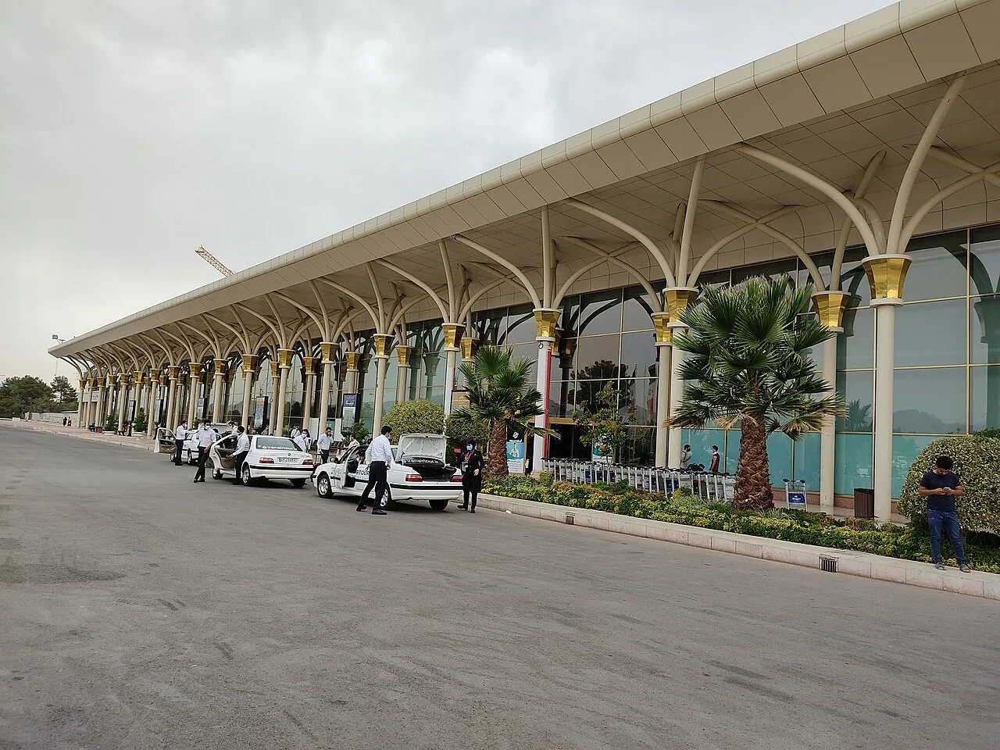

دليل الطوارئ أثناء السفر
إذا تأخرت الرحلة أو تغيرت الخطة:
خطوات هادئة لتقليل الارتباك.
الإجابة المختصرة
عند تأخر الرحلة أو تغير خطتك إلى مشهد، تواصل مع شركة النقل عبر قنواتها الرسمية، واحتفظ بإشعارات التغيير والتذاكر والإيصالات. تحقق من خيارات إعادة الحجز أو الاسترداد وحقوقك وفق شروط التذكرة والقانون المطبق، ثم أبلغ مكان الإقامة ورتب انتقالك بعد تأكيد الموعد الجديد.
قد يتغير موعد رحلة أو وسيلة نقل بسبب ظروف تشغيلية أو جوية أو تنظيمية. تختلف حقوق المسافر وشروط التعويض والاسترداد بحسب الناقل ونوع التذكرة والقانون المطبق، لذلك ابدأ بتوثيق ما حدث واطلب المعلومات من الجهة المسؤولة.

تحقق من التحديث الرسمي أولاً
راجع تطبيق شركة الطيران أو الناقل ورسائل الحجز ولوحات المطار، وتأكد من رقم الرحلة والتاريخ والمدينة. لا تعتمد على رسالة معاد توجيهها أو منشور اجتماعي وحده. إذا كان الحجز عبر وسيط، تواصل مع الناقل والوسيط واحتفظ بأرقام البلاغات.
احتفظ بتأكيد الحجز والإيصالات ورسائل التغيير وصورة من الإعلان الرسمي عند الحاجة إلى تقديم مطالبة لاحقاً.
قبل قبول التعديل أو الإلغاء
اسأل عن الخيارات المتاحة كتابةً: تغيير الموعد، مسار بديل، استرداد، أو خدمات أخرى إن كانت مشمولة بشروط الحجز. اقرأ شروط التذكرة ولا تفترض أن كل شركة تقدم المزايا نفسها أو أن التعويض مضمون.
إذا كانت لديك رحلة متابعة أو موعد طبي، أخبر الناقل بذلك واطلب توضيح الخيارات، لكن لا تعتبر ذلك ضماناً لقبول طلبك.
إذا كنت عالقاً في المطار
تأكد من مكان الانتظار الآمن ووسيلة الوصول إلى الإقامة، واحتفظ بالهاتف مشحوناً وبنسخ وثائق السفر. إذا احتجت إلى مبيت أو وجبة، اسأل الناقل عن التزاماته وفق شروط الحجز والقواعد المنطبقة قبل دفع مبالغ تتوقع استردادها.
لا تدفع لشخص غير موثوق يدّعي أنه يستطيع تغيير الحجز خارج القنوات الرسمية.
تغيير النقل أو موعد الوصول إلى مشهد
إذا تغير موعد الوصول، أبلغ جهة الإقامة أو السائق أو المنسق بأقرب وقت، وتأكد من أي رسوم انتظار أو إلغاء قبل الموافقة. راجع دليل الانتقال من مطار مشهد ودليل الإقامة قرب الحرم عند الحاجة إلى تعديل الخطة.
اترك دائماً وقتاً احتياطياً بين مراحل الرحلة المهمة، خصوصاً عند السفر مع عائلة أو عند وجود موعد طبي.
متى تطلب مساعدة رسمية؟
إذا تعذر الوصول إلى حل أو لم تكن الشروط واضحة، اطلب من الناقل أو منصة الحجز تقديم الرد كتابةً، وراجع جهة حماية المستهلك أو الطيران المختصة بحسب مكان إصدار التذكرة والقانون المنطبق. في حالة فقدان وثائق أو خطر مباشر، تواصل مع الجهات الرسمية المناسبة.